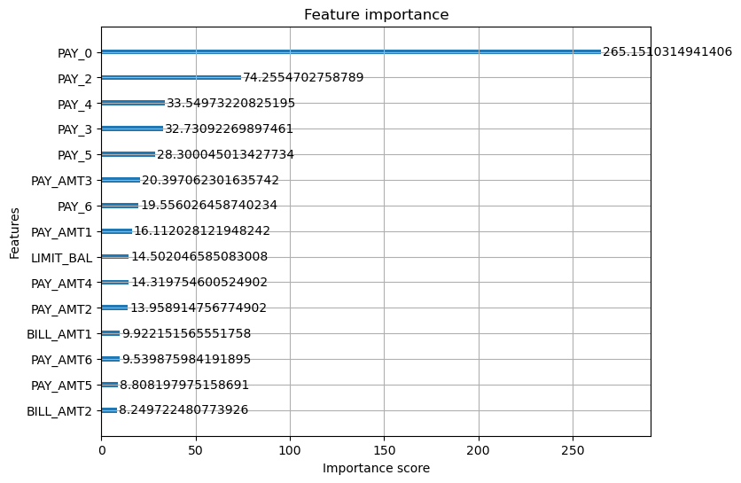

import pandas as pd
import numpy as np
import matplotlib.pyplot as plt
import sklearn.model_selection as skm
from itertools import product
from scipy.stats import uniform, randint
from sklearn.metrics import (accuracy_score, log_loss, roc_curve,
roc_auc_score, classification_report,
confusion_matrix, f1_score, matthews_corrcoef)
from sklearn.ensemble import (RandomForestRegressor as RF,
RandomForestClassifier as RFC)
from sklearn.metrics import mean_squared_error, r2_score
from sklearn.compose import ColumnTransformer
from sklearn.preprocessing import OneHotEncoder, StandardScaler
from sklearn.linear_model import LogisticRegression
from sklearn.pipeline import Pipeline
from sklearn.model_selection import (cross_val_score, GridSearchCV,
StratifiedKFold, RandomizedSearchCV)
from sklearn.calibration import calibration_curve
from scipy.stats import uniform, randint
from matplotlib.pyplot import subplots
from ISLP import load_data
import xgboost as xgb
okabe_ito = {
"orange": "#E69F00",
"sky_blue": "#56B4E9",
"green": "#009E73",
"yellow": "#F0E442",
"blue": "#0072B2",
"vermilion": "#D55E00",
"pink": "#CC79A7",
"black": "#000000",
}
oi_colors = list(okabe_ito.values())taiwan_credit = pd.read_csv("UCI_Credit_Card.csv")
X = taiwan_credit.drop(columns=["ID","default.payment.next.month"])
y = taiwan_credit["default.payment.next.month"]
feature_names = list(X.columns)
class_names = ["No Default","Default"]
X_train, X_test, y_train, y_test = skm.train_test_split(X,y,test_size = 0.2, random_state = 1001,stratify=y)
correlations = X_train.corrwith(y_train)
top_correlations = correlations.abs().sort_values(ascending=False).head(15)
correlations = correlations[top_correlations.index].to_frame(name="Correlation")
correlations.head(15)| Correlation | |
|---|---|
| PAY_0 | 0.327770 |
| PAY_2 | 0.263590 |
| PAY_3 | 0.235160 |
| PAY_4 | 0.218304 |
| PAY_5 | 0.206920 |
| PAY_6 | 0.188902 |
| LIMIT_BAL | -0.155912 |
| PAY_AMT1 | -0.070510 |
| PAY_AMT5 | -0.056307 |
| PAY_AMT2 | -0.055253 |
| PAY_AMT3 | -0.055114 |
| PAY_AMT4 | -0.052717 |
| PAY_AMT6 | -0.047702 |
| SEX | -0.042882 |
| EDUCATION | 0.025775 |
learning_rates = [0.005,0.01,0.025,0.05,0.1,0.2,0.3]
dtrain = xgb.DMatrix(X_train,label=y_train)
results = []
for lr in learning_rates:
cv_results = xgb.cv(
params = {"max_depth":3,"learning_rate":lr,"objective":"binary:logistic"},
dtrain = dtrain,
num_boost_round = 5000,
nfold = 5,
early_stopping_rounds = 50,
seed = 10
)
results.append({"learning_rate":lr,
"cv_logloss":cv_results["test-logloss-mean"].min(),
"n_trees":cv_results.shape[0]
})
result_df = pd.DataFrame(results)
results_df
--------------------------------------------------------------------------- NameError Traceback (most recent call last) Cell In[8], line 26 19 results.append({"learning_rate":lr, 20 "cv_logloss":cv_results["test-logloss-mean"].min(), 21 "n_trees":cv_results.shape[0] 22 }) 24 result_df = pd.DataFrame(results) ---> 26 results_df NameError: name 'results_df' is not defined
results_df = result_df
opt_row = results_df.loc[results_df['cv_logloss'].idxmin()]
X_sub, X_es, y_sub, y_es = skm.train_test_split(
X_train, y_train, test_size=0.15, random_state=1111, stratify=y_train
)
final_model = xgb.XGBClassifier(
n_estimators=5000,
max_depth=3,
learning_rate=opt_row['learning_rate'],
early_stopping_rounds=50,
eval_metric='logloss',
random_state=30,
verbosity=0
)
final_model.fit(X_sub,y_sub,eval_set = [(X_es,y_es)],verbose=False)XGBClassifier(base_score=None, booster=None, callbacks=None,
colsample_bylevel=None, colsample_bynode=None,
colsample_bytree=None, device=None, early_stopping_rounds=50,
enable_categorical=False, eval_metric='logloss',
feature_types=None, feature_weights=None, gamma=None,
grow_policy=None, importance_type=None,
interaction_constraints=None, learning_rate=np.float64(0.05),
max_bin=None, max_cat_threshold=None, max_cat_to_onehot=None,
max_delta_step=None, max_depth=3, max_leaves=None,
min_child_weight=None, missing=nan, monotone_constraints=None,
multi_strategy=None, n_estimators=5000, n_jobs=None,
num_parallel_tree=None, ...)In a Jupyter environment, please rerun this cell to show the HTML representation or trust the notebook. On GitHub, the HTML representation is unable to render, please try loading this page with nbviewer.org.
Parameters
log_loss(y_test, final_model.predict_proba(X_test))0.43371227857512723accuracy_score(y_test, final_model.predict(X_test))0.82fig, ax = plt.subplots(figsize = (8,6))
xgb.plot_importance(final_model, ax = ax, max_num_features = 15, importance_type = 'gain')
param_grid = {
'max_depth': [3,4,5,6],
'learning_rate':[0.005,0.01,0.025,0.05,0.1,0.2,0.3]
}
cv_records = []
dtrain = xgb.DMatrix(X_train,label=y_train)
for combo in product(*param_grid.values()):
params = dict(zip(param_grid.keys(),combo))
cv_results = xgb.cv(
params = {
"objective":"binary:logistic",
**params
},
dtrain = dtrain,
num_boost_round = 5000,
nfold = 5,
early_stopping_rounds = 50,
seed =3,
verbose_eval = False
)
cv_records.append({**params,
"cv_logloss":cv_results["test-logloss-mean"].min(),
"n_trees":cv_results.shape[0]
})
cv_df = pd.DataFrame(cv_records)
print(cv_df.sort_values('cv_logloss').head(10).to_string(index=False)) max_depth learning_rate cv_logloss n_trees
4 0.025 0.426804 271
4 0.010 0.426806 715
4 0.005 0.426837 1377
4 0.050 0.426870 133
4 0.100 0.426901 63
5 0.025 0.426930 199
5 0.005 0.426942 1034
5 0.010 0.426978 551
3 0.005 0.427035 2333
5 0.050 0.427085 110best_row = cv_df.sort_values('cv_logloss').iloc[0]
best_params = {
"max_depth": int(best_row["max_depth"]),
"learning_rate": best_row["learning_rate"]
}
best_params{'max_depth': 4, 'learning_rate': np.float64(0.025)}final_tuned = xgb.XGBClassifier(
n_estimators=5000,
**best_params,
early_stopping_rounds=50,
eval_metric='logloss',
random_state=91,
verbosity=0
)
final_tuned.fit(X_sub,y_sub,eval_set = [(X_es,y_es)],verbose=False)XGBClassifier(base_score=None, booster=None, callbacks=None,
colsample_bylevel=None, colsample_bynode=None,
colsample_bytree=None, device=None, early_stopping_rounds=50,
enable_categorical=False, eval_metric='logloss',
feature_types=None, feature_weights=None, gamma=None,
grow_policy=None, importance_type=None,
interaction_constraints=None, learning_rate=np.float64(0.025),
max_bin=None, max_cat_threshold=None, max_cat_to_onehot=None,
max_delta_step=None, max_depth=4, max_leaves=None,
min_child_weight=None, missing=nan, monotone_constraints=None,
multi_strategy=None, n_estimators=5000, n_jobs=None,
num_parallel_tree=None, ...)In a Jupyter environment, please rerun this cell to show the HTML representation or trust the notebook. On GitHub, the HTML representation is unable to render, please try loading this page with nbviewer.org.
Parameters
final_tuned.best_iteration255log_loss(y_test,final_tuned.predict_proba(X_test))0.43292643953795457accuracy_score(y_test,final_tuned.predict(X_test))0.8203333333333334n_iter = 50
rng = np.random.default_rng(413242)
dtrain = xgb.DMatrix(X_train,label=y_train)
results = []
for i in range(n_iter):
params = {
"max_depth": rng.integers(3,9),
"learning_rate": 10**(rng.uniform(-2, np.log10(0.3))),
"subsample": rng.uniform(0.5,1.0),
"colsample_bytree": rng.uniform(0.5,1.0),
"min_child_weight": rng.choice([1,3,5,7,15]),
"reg_lambda": 10**rng.uniform(-3,1)
}
cv_results = xgb.cv(
params = {
"objective":"binary:logistic",
**params
},
dtrain = dtrain,
num_boost_round = 5000,
nfold = 5,
early_stopping_rounds = 50,
seed = 897,
verbose_eval=False
)
results.append({**params,
"cv_logloss":cv_results["test-logloss-mean"].min(),
"num_trees":cv_results.shape[0]})
results_df = pd.DataFrame(results).sort_values("cv_logloss")
results_df.head(10)| max_depth | learning_rate | subsample | colsample_bytree | min_child_weight | reg_lambda | cv_logloss | num_trees | |
|---|---|---|---|---|---|---|---|---|
| 19 | 5 | 0.028246 | 0.780580 | 0.706528 | 5 | 3.074161 | 0.424926 | 236 |
| 12 | 6 | 0.025078 | 0.791556 | 0.650300 | 15 | 0.003431 | 0.424949 | 222 |
| 11 | 4 | 0.023801 | 0.820364 | 0.583575 | 5 | 0.055479 | 0.425048 | 367 |
| 10 | 6 | 0.014598 | 0.697135 | 0.790506 | 1 | 1.299203 | 0.425054 | 367 |
| 40 | 3 | 0.012331 | 0.510528 | 0.641863 | 3 | 6.768941 | 0.425067 | 982 |
| 24 | 5 | 0.038816 | 0.824345 | 0.641986 | 1 | 0.042883 | 0.425077 | 164 |
| 27 | 4 | 0.025765 | 0.836835 | 0.548860 | 5 | 0.001329 | 0.425092 | 286 |
| 7 | 6 | 0.018953 | 0.686157 | 0.822916 | 5 | 0.007725 | 0.425188 | 278 |
| 34 | 6 | 0.052642 | 0.894983 | 0.697544 | 3 | 0.142983 | 0.425230 | 81 |
| 37 | 4 | 0.032593 | 0.774230 | 0.712340 | 3 | 0.003584 | 0.425243 | 241 |
best_row_rs = results_df.iloc[0]
rs_params = {
"max_depth":int(best_row_rs["max_depth"]),
"learning_rate":best_row_rs["learning_rate"],
"subsample":best_row_rs["subsample"],
"colsample_bytree":best_row_rs["colsample_bytree"],
"min_child_weight":best_row_rs["min_child_weight"],
"reg_lambda":best_row_rs["reg_lambda"]
}
rs_final = xgb.XGBClassifier(
n_estimators=5000,
**rs_params,
early_stopping_rounds=50,
eval_metric='logloss',
random_state=300,
verbosity=0
)
rs_final.fit(X_sub,y_sub,eval_set = [(X_es,y_es)],verbose=False)XGBClassifier(base_score=None, booster=None, callbacks=None,
colsample_bylevel=None, colsample_bynode=None,
colsample_bytree=np.float64(0.706528395851397), device=None,
early_stopping_rounds=50, enable_categorical=False,
eval_metric='logloss', feature_types=None, feature_weights=None,
gamma=None, grow_policy=None, importance_type=None,
interaction_constraints=None,
learning_rate=np.float64(0.028246280372998995), max_bin=None,
max_cat_threshold=None, max_cat_to_onehot=None,
max_delta_step=None, max_depth=5, max_leaves=None,
min_child_weight=np.float64(5.0), missing=nan,
monotone_constraints=None, multi_strategy=None, n_estimators=5000,
n_jobs=None, num_parallel_tree=None, ...)In a Jupyter environment, please rerun this cell to show the HTML representation or trust the notebook. On GitHub, the HTML representation is unable to render, please try loading this page with nbviewer.org.
Parameters
rs_final.best_iteration182log_loss(y_test, rs_final.predict_proba(X_test))0.4307366381292283accuracy_score(y_test,rs_final.predict(X_test))0.8221666666666667